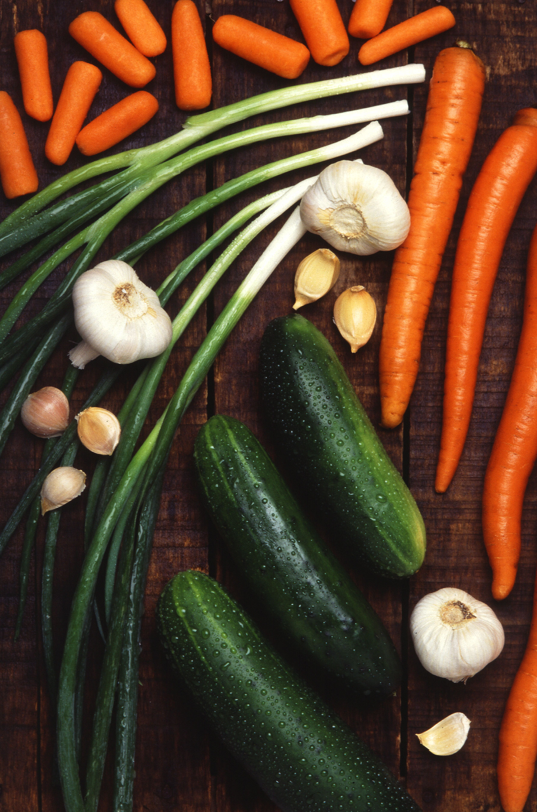

1,05 bilhão de toneladas
de resíduos alimentares no mundo em 2022.
Projeto acadêmico · UFFS
O AlimentaConsciente reúne receitas de aproveitamento, dicas de conservação e informações sobre o desperdício doméstico de alimentos.
Projeto acadêmico alinhado à ODS 12 e à meta 12.3.
Explorar receitas
Em 2022, cerca de 19% dos alimentos disponíveis aos consumidores foram desperdiçados no varejo, nos serviços de alimentação e nas residências. O descarte dentro de casa representa a maior parcela desse total.
de resíduos alimentares no mundo em 2022.
do desperdício contabilizado ocorreu nos domicílios.
por pessoa ao ano nos domicílios, em média mundial.
Estimativas mundiais referentes a 2022, incluindo partes não comestíveis. Fonte: UNEP — Food Waste Index Report 2024.
Quando descartamos comida, também perdemos os recursos usados para produzi-la. O problema possui três dimensões:
A produção utiliza terra, água e energia. Perdas e desperdício de alimentos, juntos, estão associados a aproximadamente 8% a 10% das emissões globais de gases de efeito estufa (UNEP, 2024).
O descarte convive com dificuldades de acesso à alimentação. Reduzir desperdícios domésticos não substitui políticas de combate à fome, mas incentiva o uso responsável dos recursos.
O alimento comprado e descartado representa dinheiro que poderia ser destinado a outras necessidades da família.
Comprar sem conferir a despensa, preparar porções maiores do que o necessário e esquecer sobras na geladeira são situações que podem favorecer o descarte. Pesquisas sobre hábitos domésticos destacam o papel do planejamento, da conservação e do reaproveitamento.
Antes de ir ao mercado, verifique o que já possui. Planeje refeições usando primeiro alimentos que precisam ser consumidos em breve, conserve-os corretamente e prepare porções adequadas. Reaproveite apenas ingredientes e sobras em condições seguras.
Leia mais: Schanes, Dobernig e Gözet (2018) e Stancu, Haugaard e Lähteenmäki (2016).
Ideias para utilizar os alimentos que você já tem.
Ver receitasInforme o que está disponível em casa e encontre sugestões.
Buscar receitasConsulte orientações de armazenamento e higiene.
Ver orientações